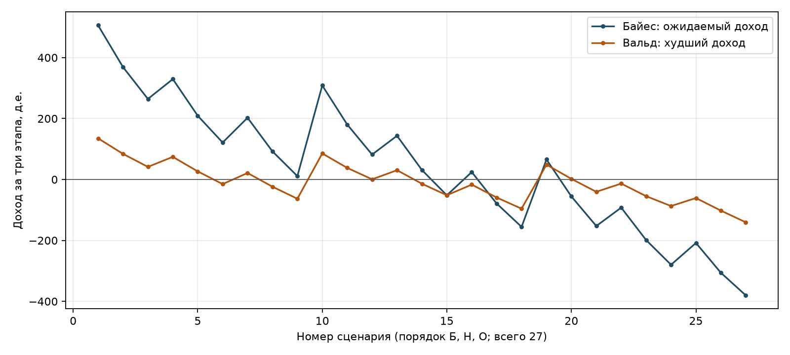

| ФИО: | Конанчук Иван Алексеевич |
| Поток: | 1.1 |
| Код: | github.com/chikirao/met_opt, папка L4 |
Нужно выбрать покупки и продажи на трёх этапах, чтобы получить наибольший доход по выбранному критерию. Выполнено полное задание: математическая модель и программа метода Беллмана с выбором критерия Байеса или Вальда.
В Word заданы начальный портфель, 600 д.е. свободных денег и правила изменения рынка. Из Excel дополнительно взяты комиссии и минимальные остатки. Исходные файлы сохранены в папке data.
| Актив | Начальная сумма | Пакет | Комиссия за сделку | Минимум |
|---|---|---|---|---|
| ЦБ1 | 100 | 25 | 4% | 30 |
| ЦБ2 | 800 | 200 | 7% | 150 |
| Депозит | 400 | 100 | 5% | 100 |
Начальный капитал равен 100 + 800 + 400 + 600 = 1900 д.е. В таблице ниже указаны множители стоимости. Например, 0,8 означает потерю 20%, а 1,07 означает рост 7%.
| Этап | Ситуация | Вероятность | ЦБ1 | ЦБ2 | Депозит |
|---|---|---|---|---|---|
| 1 | Благоприятная | 0.6 | 1.2 | 1.1 | 1.07 |
| 1 | Нейтральная | 0.3 | 1.05 | 1.02 | 1.03 |
| 1 | Негативная | 0.1 | 0.8 | 0.95 | 1 |
| 2 | Благоприятная | 0.3 | 1.4 | 1.15 | 1.01 |
| 2 | Нейтральная | 0.2 | 1.05 | 1 | 1 |
| 2 | Негативная | 0.5 | 0.6 | 0.9 | 1 |
| 3 | Благоприятная | 0.4 | 1.15 | 1.12 | 1.05 |
| 3 | Нейтральная | 0.4 | 1.05 | 1.01 | 1.01 |
| 3 | Негативная | 0.2 | 0.7 | 0.94 | 1 |
Комиссия взимается с суммы покупки и продажи. Пакет всегда равен четверти начальной денежной стоимости: 25, 200 или 100 д.е. Продажи можно использовать для оплаты покупок того же этапа. Кредит и отрицательные активы запрещены. Минимумы соблюдаются после сделки и после любого исхода рынка, включая конец третьего этапа.
Ситуации этапов считаются независимыми: условных вероятностей в задании нет. Свободные деньги не растут. Итоговый капитал включает деньги и стоимость всех активов; обязательная продажа портфеля в конце не предполагается. Эти уточнения необходимы, поскольку в исходниках не указаны порядок начисления комиссии и момент проверки минимумов.
Состояние s содержит всё, что нужно для следующего решения. На этапе t выбирается управление u из допустимого множества Uₜ(s). После случайного события ω система переходит в Tₜ(s,u,ω), а доход этапа равен gₜ(s,u,ω).
Jₜ является лучшим результатом оставшихся этапов. Для Байеса оператор ρₜ берёт сумму значений по исходам с их вероятностями. Для Вальда он берёт наименьшее значение из возможных исходов. Максимум снаружи выбирает лучшее доступное управление.
При обратном проходе сначала находятся решения последнего этапа, потом второго, затем первого. Прямой проход начинается с исходного состояния и восстанавливает действия по уже найденным решениям. После каждого наблюдаемого исхода используется своё продолжение.
Состояние s = (x₁,x₂,x₃,c) задаёт текущие денежные стоимости ЦБ1, ЦБ2, депозита и свободные средства. Управление k = (k₁,k₂,k₃) состоит из целых чисел пакетов: положительное число означает покупку, отрицательное означает продажу, ноль означает отсутствие сделки.
Размеры пакетов q = (25,200,100), ставки комиссии α = (0,04;0,07;0,05). После сделки суммы активов y и свободные деньги d равны
Модуль |kᵢ| нужен, чтобы комиссия была положительной и при покупке, и при продаже. Для выбранного этапа и исхода j множитель стоимости актива равен rₜⱼᵢ.
Допустимость означает d ≥ 0, yᵢ ≥ ℓᵢ и rₜⱼᵢyᵢ ≥ ℓᵢ для каждого исхода j, где ℓ = (30,150,100). Например, на втором этапе ЦБ1 могут потерять 40%. Поэтому до изменения рынка их должно быть не меньше 30 / 0,6 = 50 д.е.
Для расчёта удобнее максимизировать конечный капитал V, а доход получить вычитанием начального капитала. Это эквивалентно сумме доходов этапов: промежуточные капиталы сокращаются.
Доход одного этапа можно записать как Σᵢ(rₜⱼᵢ - 1)yᵢ - f(k). В текущем управлении учитываются только известные события. Одну последовательность из трёх сделок нельзя считать полным планом: продолжение зависит от исходов.
Для каждого состояния перебираются все целые изменения пакетов, совместимые с остатками и бюджетом. Для каждой сделки рассматриваются три исхода. Их продолжения объединяются выбранным критерием, после чего сохраняются лучший результат и соответствующая сделка.
Беллман(t, s):
если t = 4: вернуть стоимость портфеля и денег
если ответ для (t, s) сохранён: вернуть его
лучший_результат = минус бесконечность
для каждого допустимого целого k:
для каждого из трёх исходов j:
z[j] = Беллман(t + 1, переход(s, k, j))
оценка = сумма p[j]*z[j] для Байеса или min(z) для Вальда
если оценка больше лучшей: сохранить оценку и k
вернуть сохранённый результат
Прямой проход:
начать с (100, 800, 400, 600)
взять сохранённую сделку для текущего состояния
для каждого исхода продолжить по соответствующей ветви
В программе используется вычисление по запросу с сохранением состояний. Значения возвращаются от последнего этапа к первому. Затем отдельный прямой проход восстанавливает 13 решений: одно на первом этапе, три на втором и девять на третьем.
На последнем этапе конечная стоимость линейна по активам. Для Байеса коэффициенты равны (1,02;1,04;1,024), для Вальда равны (0,70;0,94;1,00), так как все худшие множители находятся в одном исходе. Покупка пакета стоит qᵢ(1 + αᵢ). Если итоговая ценность пакета не превышает эту цену, покупать сверх обязательного минимума невыгодно.
Сначала выбираются выгодные продажи до нижней границы или сохранение актива. Если нужны обязательные покупки для соблюдения минимумов, проверяется бюджет и стоимость продаж для их оплаты. Когда сокращённое вычисление неприменимо, программа выполняет полный перебор. Так последний слой вычисляется точно; замены всей задачи жадным выбором нет.
Четыре автоматические проверки охватывают комиссию и баланс, запрет кредита, нижние границы, невозможное продолжение и сравнение последнего слоя с полным перебором. Дополнительно весь оптимум проверен независимой целочисленной моделью дерева сценариев. Для обоих критериев разность результатов меньше 10⁻⁹ д.е., относительный разрыв MILP равен нулю.
Все 27 конечных сценариев проверены на допустимость. Их вероятности дают сумму 1. Ожидание и минимум по восстановленному дереву совпадают со значением Беллмана. Суммы активов хранятся в целых миллионных долях д.е.; округление используется при выводе. Результаты критерия сравниваются с машинной точностью.
PortfolioModel хранит исходные данные и строит допустимые сделки. State описывает состояние. Criterion объединяет исходы. BellmanSolver рассчитывает значения и сохраняет Decision для каждого нужного состояния. SolveResult содержит восстановленные действия и сценарии.
| Файл | Назначение |
|---|---|
| read_data.py | Чтение исходных ячеек Excel |
| portfolio.py | Модель, состояния, рекурсия Беллмана и последний слой |
| main.py | Выбор критерия, запуск, сохранение плана и рисунка |
| test_portfolio.py | Автоматические проверки |
| verify.py | Независимая проверка оптимума через MILP |
| results/ | Числовые результаты, 13 решений и 27 сценариев каждого критерия |
python -m pip install -r requirements.txt python main.py --criterion bayes python main.py --criterion wald python main.py --criterion all python -m unittest -v # Необязательная независимая проверка: python -m pip install -r requirements-check.txt python verify.py python make_report.py
На текущем запуске расчёт Байеса занял 12.587 с, Вальда 7.246 с. Рассмотрено около 6 млн управлений первого и второго этапов на критерий.
Для Байеса ρₜ(z) = Σⱼ pₜⱼzⱼ. Программа получила ожидаемый конечный капитал 2033.7038838 д.е. Ожидаемый доход равен 133.7038838 д.е.
Обозначения истории: Б означает благоприятный исход, Н нейтральный, О негативный. Например, БО перед третьим этапом означает, что первый этап был благоприятным, а второй негативным. В четвёртом столбце перечислены три актива и свободные деньги.
| Этап | История | k₁; k₂; k₃ | После сделки: x₁; x₂; x₃; c | Комиссия |
|---|---|---|---|---|
| 1 | начало | 23; 0; 0 | 675; 800; 400; 2 | 23 |
| 2 | Б | -30; 0; 0 | 60; 880; 428; 722 | 30 |
| 3 | ББ | 0; 0; 0 | 84; 1012; 432.28; 722 | 0 |
| 3 | БН | 0; 0; 0 | 63; 880; 428; 722 | 0 |
| 3 | БО | 1; 0; 0 | 61; 792; 428; 696 | 1 |
| 2 | Н | -26; 0; 0 | 58.75; 816; 412; 626 | 26 |
| 3 | НБ | 0; 0; 0 | 82.25; 938.4; 416.12; 626 | 0 |
| 3 | НН | 0; 0; 0 | 61.6875; 816; 412; 626 | 0 |
| 3 | НО | 1; 0; 0 | 60.25; 734.4; 412; 600 | 1 |
| 2 | О | -19; 0; 0 | 65; 760; 400; 458 | 19 |
| 3 | ОБ | 0; 0; 0 | 91; 874; 404; 458 | 0 |
| 3 | ОН | 0; 0; 0 | 68.25; 760; 400; 458 | 0 |
| 3 | ОО | 1; 0; 0 | 64; 684; 400; 432 | 1 |
На первом этапе покупаются 23 пакета ЦБ1: стоимость 23·25 = 575, комиссия 23, деньги 600 - 575 - 23 = 2. После негативного рынка состояние равно (540;760;400;2).
На втором этапе продаются 19 пакетов ЦБ1: деньги 2 + 475 - 19 = 458, ЦБ1 остаётся 65. После негативного рынка получаю (39;684;400;458). Перед третьим этапом покупаю один пакет ЦБ1, чтобы выполнить минимум после возможного падения: ЦБ1 = 64, деньги = 458 - 25 - 1 = 432.
Последний негативный исход даёт капитал 64·0,7 + 684·0,94 + 400 + 432 = 1519,76. Это показывает, почему максимальный ожидаемый доход не является гарантированной прибылью.
Для Вальда ρₜ(z) = minⱼ zⱼ. Вероятности не участвуют в выборе сделки: каждый доступный исход рассматривается как возможный. Итоговый капитал в худшем сценарии равен 1759.54 д.е., доход равен -140.46 д.е.
| Этап | История | k₁; k₂; k₃ | После сделки: x₁; x₂; x₃; c | Комиссия |
|---|---|---|---|---|
| 1 | начало | -2; -3; 0 | 50; 200; 400; 1206 | 44 |
| 2 | Б | 0; 0; 0 | 60; 220; 428; 1206 | 0 |
| 3 | ББ | -1; 0; 0 | 59; 253; 432.28; 1230 | 1 |
| 3 | БН | 0; 0; 0 | 63; 220; 428; 1206 | 0 |
| 3 | БО | 1; 0; 0 | 61; 198; 428; 1180 | 1 |
| 2 | Н | 0; 0; 0 | 52.5; 204; 412; 1206 | 0 |
| 3 | НБ | -1; 0; 0 | 48.5; 234.6; 416.12; 1230 | 1 |
| 3 | НН | 0; 0; 0 | 55.125; 204; 412; 1206 | 0 |
| 3 | НО | 1; 0; 0 | 56.5; 183.6; 412; 1180 | 1 |
| 2 | О | 1; 0; 0 | 65; 190; 400; 1180 | 1 |
| 3 | ОБ | -1; 0; 0 | 66; 218.5; 404; 1204 | 1 |
| 3 | ОН | -1; 0; 0 | 43.25; 190; 400; 1204 | 1 |
| 3 | ОО | 1; 0; 0 | 64; 171; 400; 1154 | 1 |
Первая сделка продаёт два пакета ЦБ1 и три пакета ЦБ2. Комиссия равна 50·0,04 + 600·0,07 = 44 д.е. Свободные средства: 600 + 50 + 600 - 44 = 1206 д.е.
В ветви ООО после первого рынка состояние (40;190;400;1206). На втором этапе нужен один пакет ЦБ1: после покупки (65;190;400;1180), после рынка (39;171;400;1180). Ещё один пакет перед третьим этапом даёт (64;171;400;1154). Конечная стоимость равна 64·0,7 + 171·0,94 + 400 + 1154 = 1759,54 д.е.
Отрицательный доход не является ошибкой расчёта. При неблагоприятном рынке потери неизбежны из-за обязательных вложений и комиссий. Этот план делает наихудший результат максимально возможным в принятой модели.
При равных вычисленных значениях программа выбирает первый вариант в лексикографическом порядке пакетов. Возможны другие оптимальные планы с тем же значением критерия.
| Стратегия | Ожидаемый капитал | Худший капитал | Ожидаемый доход | Худший доход |
|---|---|---|---|---|
| Байес | 2033.7039 | 1519.76 | 133.7039 | -380.24 |
| Вальд | 1909.2916 | 1759.54 | 9.2916 | -140.46 |
| Без сделок | 2015.8882 | 1676.56 | 115.8882 | -223.44 |

Без сделок ожидаемый доход равен 115.8882 д.е. Управление по Байесу увеличивает его на 17.8157 д.е. Стратегия Вальда улучшает худший результат относительно бездействия на 82.98 д.е., но её ожидаемый доход меньше, чем у стратегии Байеса.
В работе построена модель состояния портфеля, записано соотношение Беллмана, выполнены обратное вычисление и прямое восстановление плана. Пользователь выбирает, какой результат оптимизировать: ожидаемый или худший. Для обоих критериев найдены полные планы, а не отдельные сделки. Учтены комиссии, целые пакеты, запрет кредита и минимумы по активам. Оптимумы подтверждены независимой моделью.
Главное различие, которое показывает задача: выгодное в среднем решение может сильно проиграть в отдельном сценарии. Динамическое программирование учитывает будущие решения, но не использует знание будущих событий. Полученные числа относятся к явно принятому порядку проверки минимумов и комиссий; при другом порядке модель и результат нужно пересчитать.